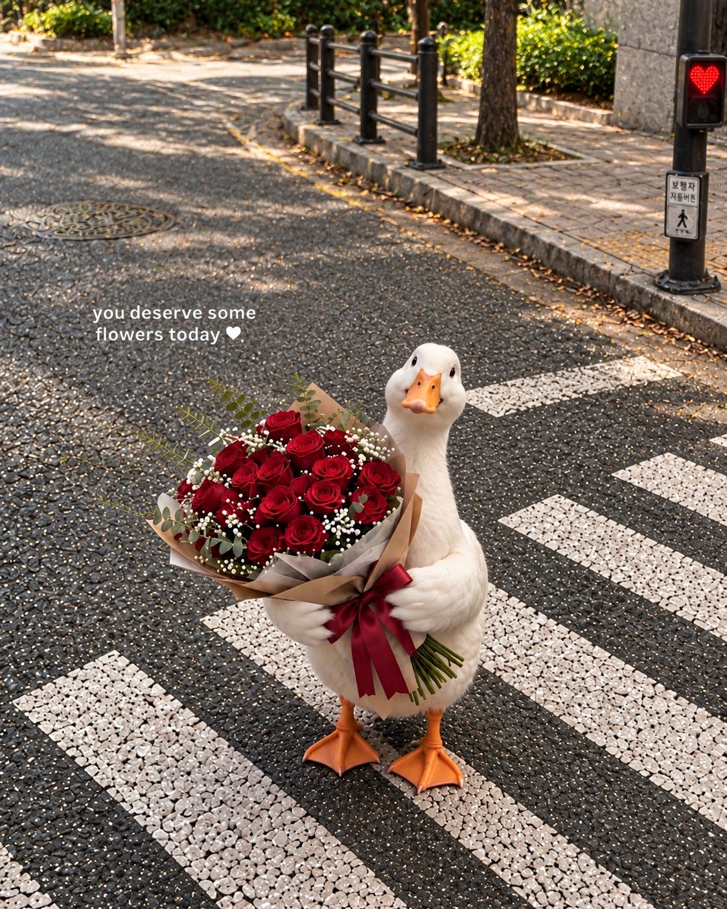
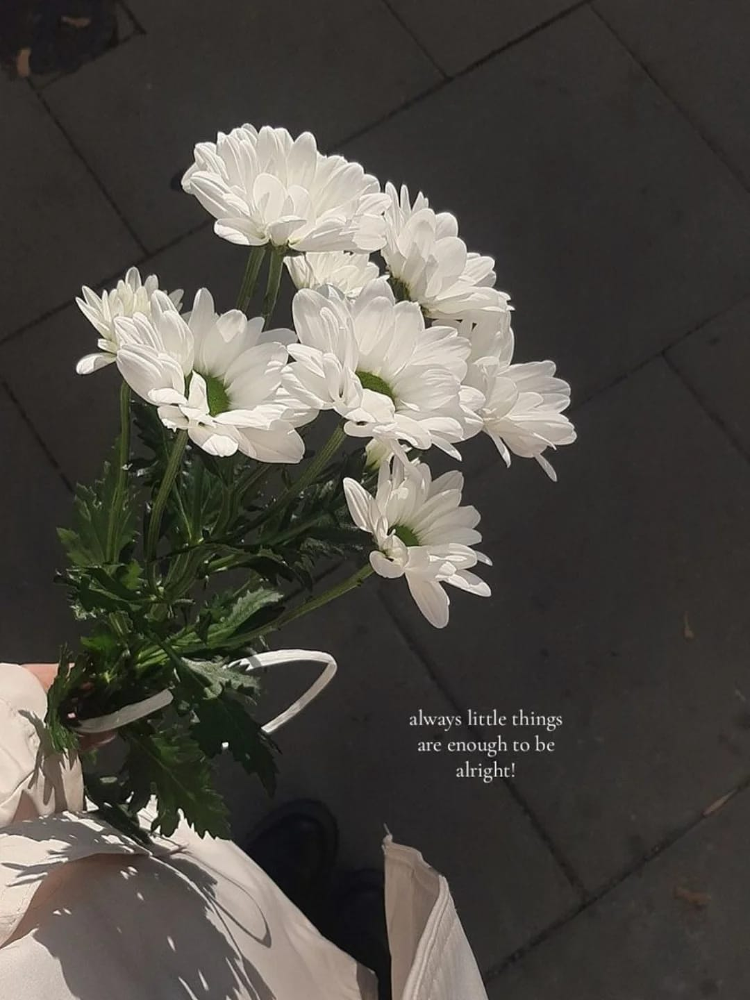

In the Name of All That Is Sacred Between Us
A Royal Epistle, penned with the solemnity of a man who stands before the grandeur of your presence, fully aware he is not entirely worthy of the audience, yet bold enough to request it anyway.
Chapter I
Your Majesty, I write to you today as Paul wrote unto the Galatians, with the hope and faith that these words shall make their effect as intended, reaching past every wall you have raised and every silence you have donned as armour, arriving softly at that place within you where you are not a warrior but simply yourself.
I write not from the chambers of perfection, for I am no perfect man. I write from the chambers of sincerity, where I keep only one name upon the throne. That name, without contest, without rival and without reservation, is yours.
"Hope this brings back the comfort you almost felt was lost."
Chapter II

It is recorded in the courts of this heart and proclaimed before all that matters: you are genuinely, unashamedly, quietly good. Not the performative goodness of one who seeks applause, but the kind that shows up at midnight when no one is watching, the kind that prays even when you are upset, the kind that gives even when you are running low.
Your kindness is not weakness. It is a chosen discipline of the soul, a deliberate act of grace in a world that rarely deserves it.
You love the way the earth loves rain. Quietly, deeply, and without expectation of gratitude.
You do not simply dream. You build. With every early morning and every late night, you construct the life you were called to live.
Resilient as iron, soft as petals. The rarest combination, reserved only for those forged by fire yet still choosing to bloom.
Your faith is not decoration. It is the very foundation upon which you stand, the quiet force that steadies you even when the earth beneath you shakes.
Your heart folds when love feels threatened. That, Your Majesty, is not a flaw. That is the most human, the most precious thing about you.
Chapter III
Let me be candid with you in the manner that only a man who has memorised the architecture of your silences can afford to be: I know when you are upset with me. I know it the way a sailor knows a storm before it arrives. Not by the thunder, but by the particular stillness of the water.
And do you know what I do? I deploy my finest manoeuvres. I summon every ounce of charm available to a man of my limited but very enthusiastic repertoire. Because I have made it my personal mission, my sovereign duty, that you shall not remain in that mood a minute longer than is absolutely necessary.
Is it undignified? Perhaps. Do I mind? Not in the slightest. There is no other woman in this entire world to whom I wish to bring this energy. Not one. Zero. Nought. The figure is as round as it is completely final.
And before you consider a rebuttal, the accused has already pleaded guilty and thrown himself upon the mercy of the court.
Chapter IV

❀ She who shapes the future ❀
❀ Dreams as vast as her grace ❀
You are a Teacher. I do not use that word to describe an occupation. I use it the way one describes a calling, a divine appointment, a thing the universe arranged long before you were even born.
I support you. Fully, without condition, without hesitation. Your dreams are not separate from mine. They are woven into the fabric of everything I am building and everything I am working towards.
And I confess, with the full dignity of a man who is not entirely ashamed of his feelings, that I am jealous of your students. Truly jealous. The privilege of sitting before you, of receiving instruction, of watching that brilliant mind organise knowledge and deliver it with care. Those students do not yet know how extraordinarily lucky they are. I, however, do. And you can trust that I will make it known.
One day you shall teach me too. And I promise you, I shall be the most attentive, the most enthusiastic and quite possibly the most insufferable student you have ever had. Front row. Hand raised for everything. Arguing points just so you have cause to explain them again.
One day, when time has softened our story into something we look back upon with warmth and laughter, I hope you remember that someone spared his time to write exactly how he sees you, believes in you and is rooting for you, even when he is imperfect at showing it.
Chapter V
I want to thank you, formally, in writing, before whatever heavens and earth may witness this, for every prayer you have lifted on my behalf. The ones you breathed quietly in your room when I was unaware. The ones you offered when we were not on speaking terms and you still, somehow, found it in your heart to intercede for me.
I may not have noticed in the moment. I may have been too tangled in my own thoughts, my own pride, my own stubborn silences. But I believe with everything in me that those prayers were heard. That they played a role in guiding my life when I could not guide it myself. Your faith reached places my own courage could not.
For that, Your Majesty, I am more grateful than any arrangement of words I currently possess is capable of expressing. From the deepest, most honest room within me, thank you.
Chapter VI
❀ Every horizon, yours to claim ❀
If time permitted and the treasury of this life allowed it at this very hour, you would already know that I would take you, without deliberation, without delay, to places your heart finds peaceful. Places where the noise of the world retreats and you are left with nothing but warmth, beauty and the knowledge that you are safe.
I look forward to that time. I am building towards it. This is not a careless promise spoken in the intoxication of a good moment. It is a declaration made with both eyes open and both feet on the ground.
One day we shall go, and you shall not need to plan or worry or manage a single thing. You shall simply arrive, elegant as you always are, and allow your man to take care of the rest.
Chapter VII
Your Majesty, I hereby petition the court, that is to say your heart, for a hearing. I do not arrive bearing excuses. I arrive bearing honesty, which I am told is a far more valuable currency in these chambers.
It is fully within your jurisdiction to punish me as you see fit. I concede this entirely. I place myself beneath your authority and submit willingly to whatever discipline you consider appropriate. Caning included. I shall receive it with dignity.
I have however noted that you are far too kind, too good and far too God fearing to go through with any of the more creative punishments. This is my quiet comfort as I stand here. Do not tell anyone I said so.
Yes, I can be too jealous sometimes. Too strict, too serious. I wear my gravity like a coat I forgot I had on. But I am already, and I say this with quiet pride, becoming a better man within the radius of your influence. I am proud of that man. He is not yet finished but he is well underway.
My one plea is this: do not be silent when conversations are needed. Silence is too easily mistaken for surrender. And you are not surrendering. I know that because underneath that magnificent mercenary exterior, underneath the armour you wear with such practised ease, there is a woman who feels deeply, loves fiercely and deserves to be held with both arms and absolutely no reservations.
Let your man take over now. You have held the fort long enough. It is not weakness to allow someone to care for you. It is wisdom. And wisdom, as we both know, is very much within your jurisdiction.
You are not losing me. I am not leaving. We keep each other. That is the arrangement, and I find it perfectly agreeable.
Chapter VIII
Every single piece of it, if you must know.
Every one of them is a small museum of us that I revisit more than I will ever openly admit to you.
The kind that happens without warning and leaves us both completely undignified and entirely at peace.
I shall not elaborate further, as this is a document of royal standing. But you know exactly what I mean.
Even the ones we argued about while eating. Perhaps especially those. Those were my favourite ones.
The fasting, the moments where we set aside everything and placed our trust in something far greater than us.
I find, to my own bewilderment, that even those have become dear to me. Within them I discovered exactly how deeply I love you.
Chapter IX
Answer them honestly. Even just to yourself.
How are you feeling right now, in this very moment, as these words reach you?
tap to reflect ♡Whatever the answer is, good, unsettled, confused or somewhere in between, it matters. It is valid. And I genuinely want to know.
What are you missing about us that you would not easily say out loud?
tap to reflect ♡Perhaps it is a small thing. Perhaps it is enormous. Either way, it deserves to be spoken. I am always listening, even when I appear otherwise.
What do you wish I understood better about you and about your heart?
tap to reflect ♡I want to understand. Not to defend myself. Just to understand. Tell me and I shall listen the way a student sits before a teacher: attentively, humbly and without interruption.
What mood do you find yourself in when you think of me? Be honest.
tap to reflect ♡Warmth? Frustration? A complicated mixture of both you cannot quite name? All are acceptable. I want the truth, even the uncomfortable kind.
If you could ask me for just one thing right now, what would it be?
tap to reflect ♡Name it. I am ready. I may not achieve it perfectly on the first attempt but I am committed to the direction, and that counts for a great deal.
Beneath the armour, beneath the silence, do you still feel this is worth it?
tap to reflect ♡I believe you do. That is precisely why the silence costs you something. Things that do not matter are easy to discard. And you have not discarded this. Neither have I.
Chapter X
I pray to the Almighty, the same God you serve, the same God in whose presence you bow, that He grant us both enough wisdom to grow, enough understanding to hear each other beyond the words, and enough patience to wait for the version of each other we are still becoming.
I am not finished growing. Neither are you. And I find great comfort in knowing we are both unfinished in the same direction: upward, forward, deeper and together.
"You deserve to be cared for, held tight and given the peace that your own heart so freely offers to others."
And so it is written, sealed with sincerity and delivered with love, from a man who knows his flaws, is working on his failures and would choose you in every version of every argument and every necessary storm without hesitation.
Your Man,
Always and Entirely
Finale
❀ For every moment we have shared, and every moment yet to come ❀
Watch this, Your Majesty. It was chosen for you, by someone who thinks of you far more than he says.
"It is never the absence of love that ends things. It is the absence of communication. I am here. I am present. I am not going anywhere."